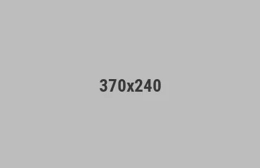

Selecting the perfect bathroom tiles is one of the most important decisions in your renovation project. With countless options available in the market, it's crucial to understand what works best for bathroom environments. At Tayo Bi Tiling in Christchurch, we've helped thousands of homeowners make the right choice for their spaces.
Moisture Resistance is Key: Bathrooms are exposed to constant moisture and humidity, making moisture-resistant materials essential. Porcelain tiles are an excellent choice as they have a low absorption rate, typically less than 0.5%. Ceramic tiles, while slightly more porous, can still work well when properly glazed and sealed. Avoid natural stone tiles like limestone in high-moisture areas as they're more susceptible to water damage and staining.
Safety and Slip-Resistance: Bathroom floors need to be safe, especially in wet conditions. Look for tiles with a slip resistance rating of R11 or higher. Textured finishes, matte surfaces, and tiles with special grip patterns provide better traction than glossy finishes. For the shower area, non-slip tiles are absolutely essential to prevent accidents and injuries for family members of all ages.
Color and Design Considerations: Light colors and neutral tones create a sense of spaciousness in smaller bathrooms, while darker tiles can add sophistication and depth. Consider using contrasting grout colors for visual interest, but remember that lighter grout shows stains more easily. Large-format tiles (24x48 inches or larger) reduce the number of grout lines, making cleaning easier and creating a more modern aesthetic.
Size and Layout: Small tiles require more grout lines, which means more maintenance. For Christchurch's climate, medium to large tiles (12x24 or 18x36 inches) offer the best balance of aesthetic appeal and practicality. Consider subway tiles for a timeless look, or go bold with geometric patterns and mosaics for a statement wall behind your vanity.
At Tayo Bi Tiling, our expert consultants can guide you through the selection process, ensuring you choose tiles that are not only beautiful but also durable and practical for bathroom use. We offer premium quality tiles from trusted manufacturers and can handle professional installation to ensure proper waterproofing and longevity.

Proper maintenance is the key to extending the life of your tiles and keeping them looking beautiful for decades. Whether you have ceramic, porcelain, or natural stone tiles, each type requires specific care approaches. The good news is that with the right routine, maintaining your tiles is straightforward and cost-effective compared to replacement.
Daily and Weekly Cleaning: Start with regular sweeping or vacuuming to remove dust and debris that can scratch tile surfaces. For daily cleaning, use a mixture of warm water and mild pH-neutral cleaner. Avoid acidic cleaners like vinegar or lemon juice as they can damage grout and certain stone tiles. Microfiber mops are excellent for tile floors as they don't leave streaks and are gentle on surfaces.
Grout Care and Prevention: Grout is porous and easily stains, making it the most vulnerable part of your tiled surface. Seal your grout within the first year of installation and reapply sealer every 1-3 years depending on foot traffic. For stubborn grout stains, use a grout-specific cleaner or a mixture of baking soda and water. Prevent mold and mildew in bathrooms by ensuring proper ventilation—use exhaust fans during and after showers.
Christchurch Climate Considerations: Our temperate climate brings different challenges than other regions. Winter moisture can encourage mold growth on grout, while the occasional dry periods require attention to prevent grout drying and cracking. During rainy seasons, ensure bathroom and kitchen tiles have proper drainage and ventilation. For outdoor tiles, seasonal cleaning before winter helps prevent algae and moss buildup.
Specific Tile Type Care: Ceramic tiles are the easiest to maintain—simply use standard tile cleaner and water. Porcelain tiles are equally durable but may have a more delicate finish, so avoid abrasive scrubbing. Natural stone tiles like marble, granite, or slate require special care with pH-neutral stone cleaners, as acidic solutions can etch and dull the finish. Always test cleaners on a small hidden area first.
Professional Maintenance: For heavily soiled tiles or difficult stains, professional cleaning services can restore your tiles to their original condition. Tayo Bi Tiling offers expert maintenance advice and can recommend professional cleaning services. Regular maintenance not only keeps your tiles looking new but also protects your investment and ensures your tiled surfaces remain safe and hygienic for years to come.

The world of tile design is constantly evolving, with 2024 bringing exciting new trends that blend functionality with aesthetic appeal. These trends are perfect for homeowners in Christchurch looking to create modern, sophisticated spaces that stand the test of time. Understanding current design directions can help you make choices that feel fresh without being too trendy.
Large-Format Tiles Rule the Market: One of the biggest trends this year is the shift toward larger tiles. Tiles measuring 24x48 inches or even larger are becoming the industry standard. These oversized tiles create a seamless, luxurious look with minimal grout lines, making spaces feel larger and more sophisticated. Large-format tiles are especially popular for kitchen backsplashes and bathroom walls where they create a stunning focal point. The reduction in grout lines also means easier maintenance and a cleaner aesthetic.
Natural Stone and Wood-Look Ceramics: There's a strong movement toward naturalistic finishes that mimic stone and wood. Porcelain tiles that replicate marble, slate, limestone, and granite offer the beauty of natural materials with superior durability and lower maintenance. Wood-look ceramic tiles bring warmth and organic feel to modern homes without the concerns of actual wood floors. These tiles work beautifully in living areas and bedrooms across Christchurch homes.
Bold Colors and Geometric Patterns: 2024 is the year to be bold! Deep jewel tones like emerald green, sapphire blue, and rich terracotta are making comebacks. Geometric patterns, from simple checkerboards to complex tessellations, are appearing in accent walls and feature areas. Hexagonal tiles, hexagons within hexagons, and Moroccan-inspired patterns add visual interest while maintaining sophistication. These bold choices work particularly well as backsplashes or accent walls.
Textured and 3D Tiles: Tactile finishes are huge this year. Textured surfaces, 3D relief patterns, and tiles with dimensional depth add luxury and visual interest. These finishes also improve slip-resistance, making them practical for bathrooms and kitchens. Handmade-looking tiles and imperfect surfaces celebrate authenticity and craftsmanship, moving away from perfectly uniform tiles of previous years.
Earthy and Sustainable Choices: There's a growing emphasis on earth-tone palettes and sustainable manufacturing. Warm beiges, terracottas, ochres, and sage greens bring natural warmth to homes. Many manufacturers are now focusing on eco-friendly production methods and recycled materials. These choices appeal to environmentally conscious homeowners and create warm, inviting spaces. At Tayo Bi Tiling, we offer a curated selection of trendy yet timeless designs that will beautify your Christchurch home for years to come.

While tiles often get all the attention, grout is equally important to the success and longevity of your tiled surfaces. Many homeowners don't realize that grout quality and proper application can make or break a tiling project. Understanding the different types of grout and how to care for them will help you maintain beautiful, durable tiled surfaces in your Christchurch home.
Cement-Based Grout (Traditional): This is the most common and affordable option. Available in unsanded and sanded varieties, cement-based grout works well for grout lines up to ⅛ inch wide (unsanded) or ⅜ inch wide (sanded). Unsanded grout is used for smaller grout lines and tiles that could be scratched by the sand. Sanded grout is stronger and less prone to shrinkage, making it ideal for larger grout lines and floor applications. However, cement-based grout is porous and requires sealing to prevent staining, especially in wet areas.
Epoxy Grout (Premium): Epoxy grout is a two-part system that's waterproof, stain-resistant, and incredibly durable. While more expensive and challenging to apply than cement-based grout, epoxy excels in high-moisture environments like bathrooms and kitchens. It doesn't require sealing, is resistant to chemicals and stains, and actually becomes harder over time. Epoxy is perfect for luxury installations or areas with heavy use, and its superior durability makes it a worthwhile investment for Christchurch's humid areas.
Urethane Grout (Modern Alternative): This newer option combines the ease of cement-based grout with many benefits of epoxy. It's highly flexible, resistant to cracking, and stain-resistant without the difficult application of epoxy. Urethane grout is ideal for areas prone to movement or temperature fluctuations. It doesn't require sealing and provides excellent performance in both wet and dry areas. Many professionals now prefer urethane for its balance of performance and workability.
Color and Aesthetic Choices: Grout color dramatically affects the appearance of your tiled surface. Light grout emphasizes individual tiles and creates a modern, clean aesthetic, but shows dirt and stains more readily. Dark grout minimizes the visual impact of grout lines and hides stains better, but can make a space feel heavier. Matching grout to tile color creates a seamless look, while contrasting grout creates striking visual definition. Many designers now use colorful grout to make decorative statements with geometric or artistic tiles.
Professional Application and Long-Term Care: Proper grout application requires skill and experience. Mistakes like incomplete filling, inconsistent curing, or poor finishing affect both appearance and durability. After installation, grout must cure properly (typically 48-72 hours) before exposing to moisture. Once cured, sealing (except for epoxy) is essential in high-moisture areas. Regular maintenance through proper cleaning and periodic resealing will keep your grout looking great and your tiles protected. At Tayo Bi Tiling, our certified installers ensure expert grout application and can advise you on the best grout type for your specific project and location.
© Tayo Bi Tiling 2024 | Premium Tile Supplier in Christchurch, NZ | Made with by HasThemes